Flume / Original production studies
Mercy studies.
Three worlds built from their own character, object, location and keyframe. Twelve selected still assets and three actual motion tests—not stock footage, a final cut, or an automatic carousel replacement.
VOW / Original design pack
The Uncommanded
Strongest first motion test: the supported pair moves away from the departing formation. Several steps rather than exactly one. Not a final edit.
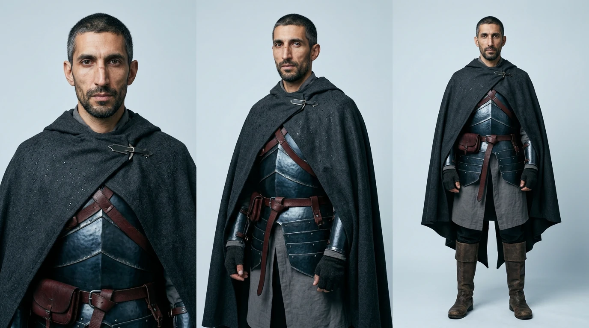
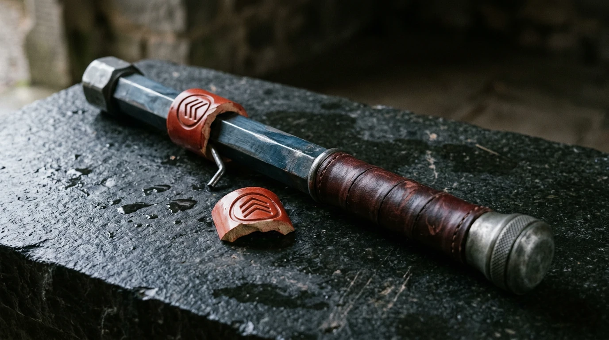
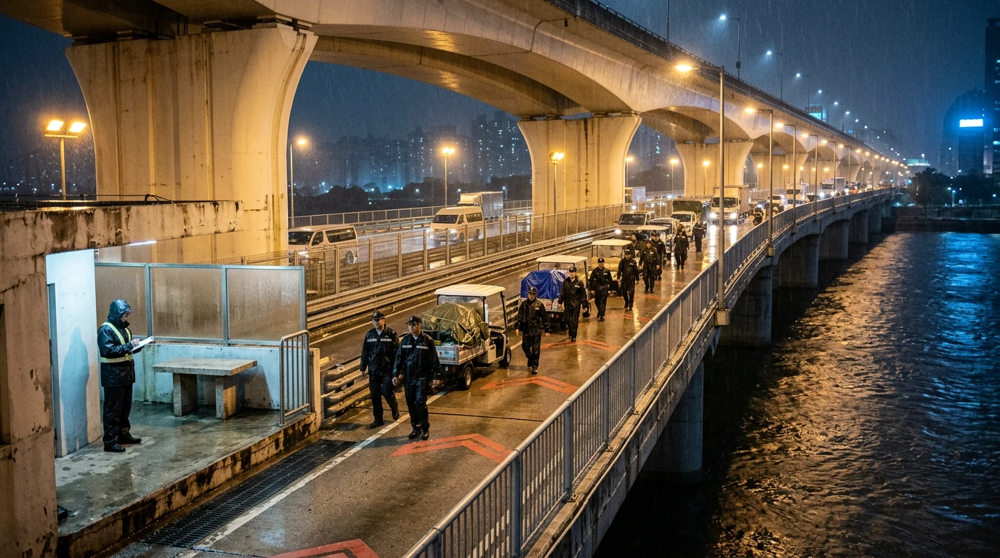
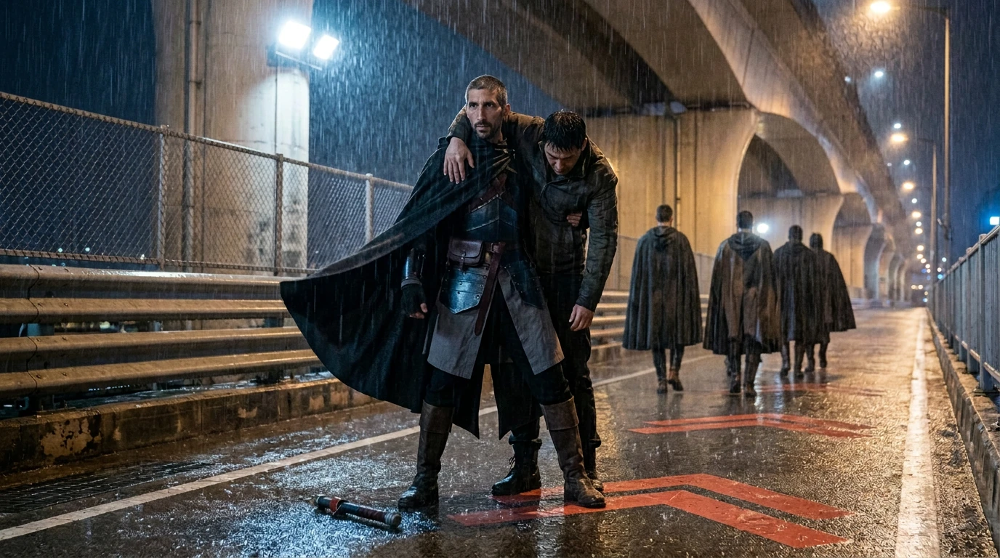
8 seconds · Veo3.1 · silent · first-frame conditioned · Download preview
ARCHIVE / Original design pack
The Price of a Face
Exchange and gate response are visible. Fine ceramic motif/color continuity softens during the transfer; not cleared as a final prop-continuity shot.
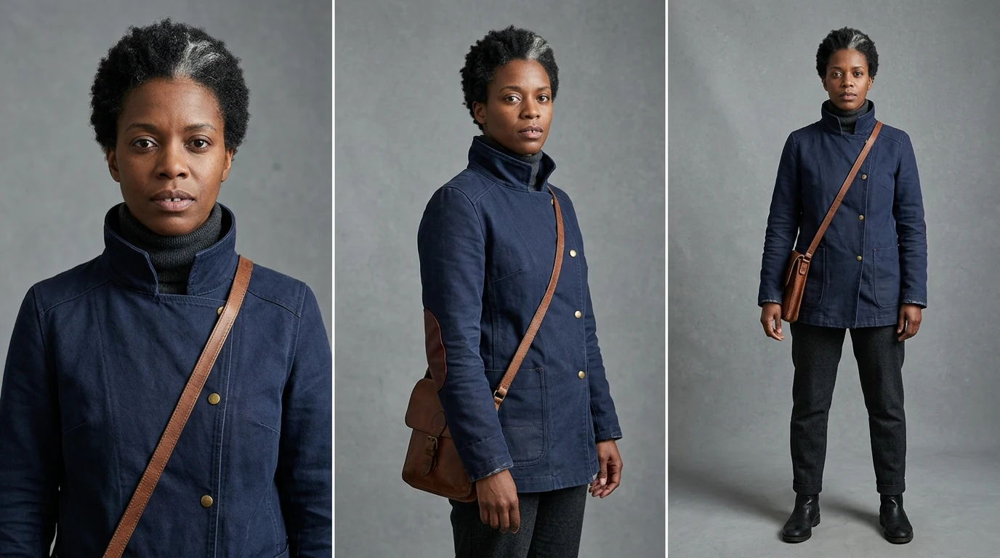
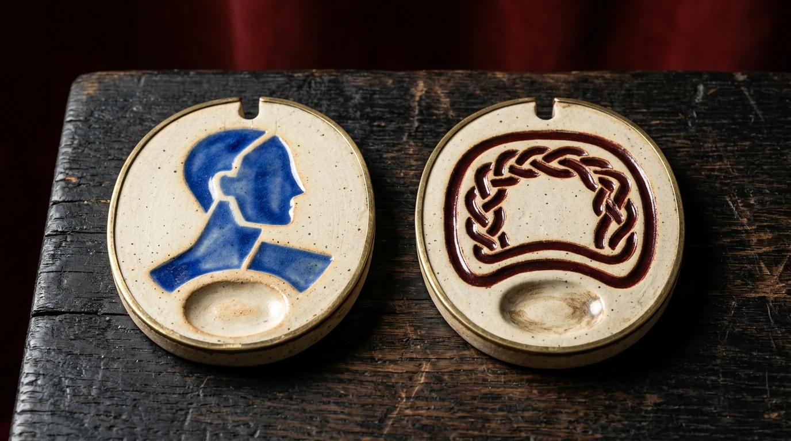
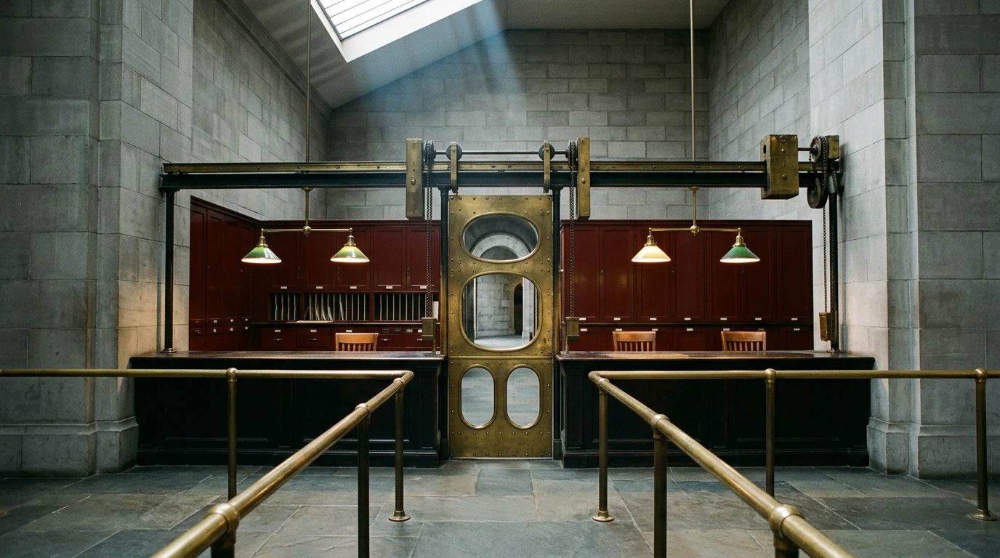
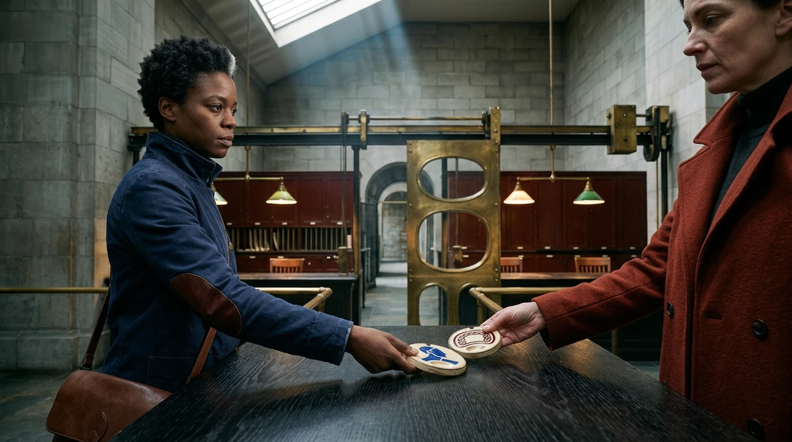
8 seconds · Veo3.1 · silent · first-frame conditioned · Download preview
PILGRIM / Original design pack
The Burden Carried
Character/animal action and abandoned cargo are present, but the intended sacrifice is not strongly readable without another shot. Motion/world study, not a complete narrative.
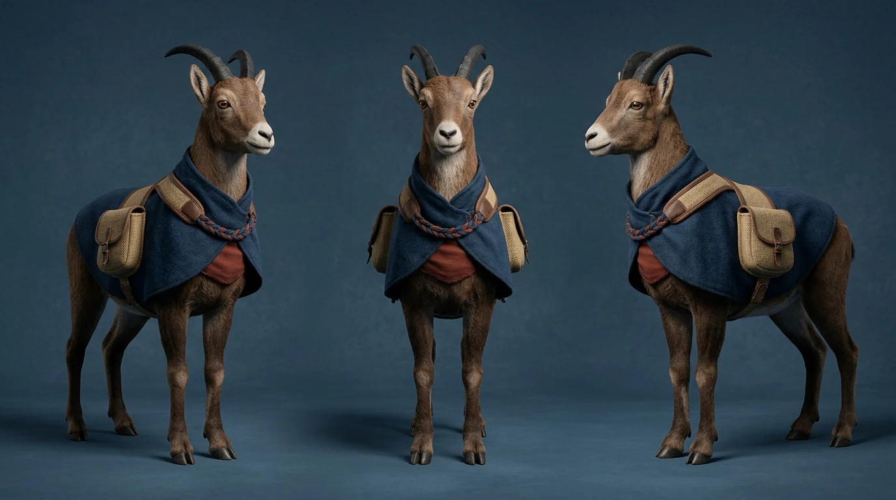
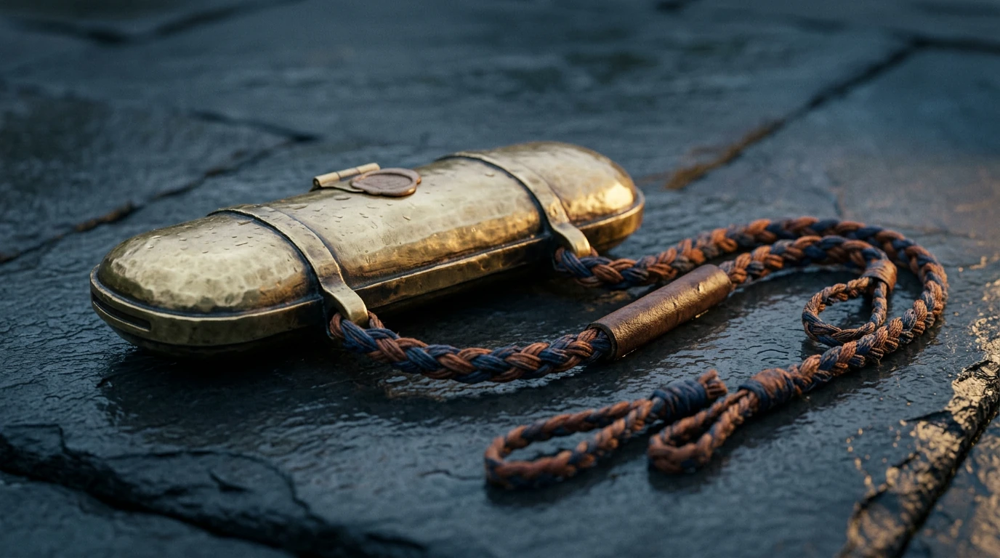
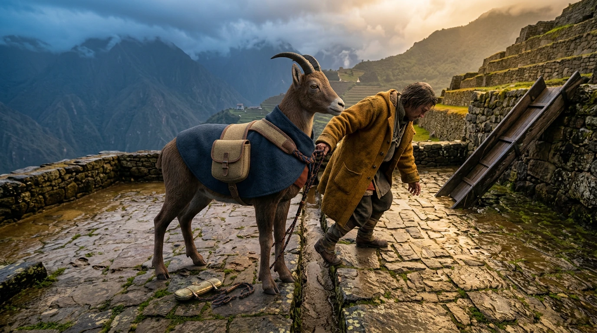
8 seconds · Veo3.1 · silent · first-frame conditioned · Download preview